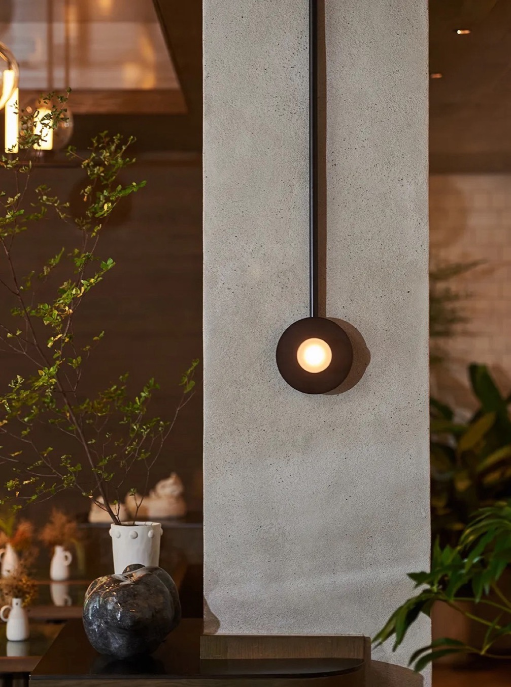
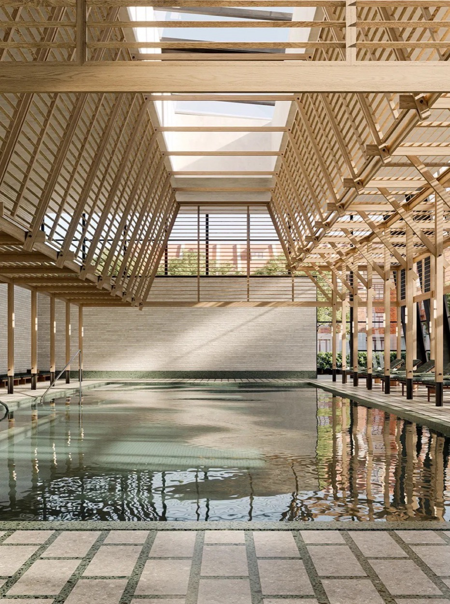
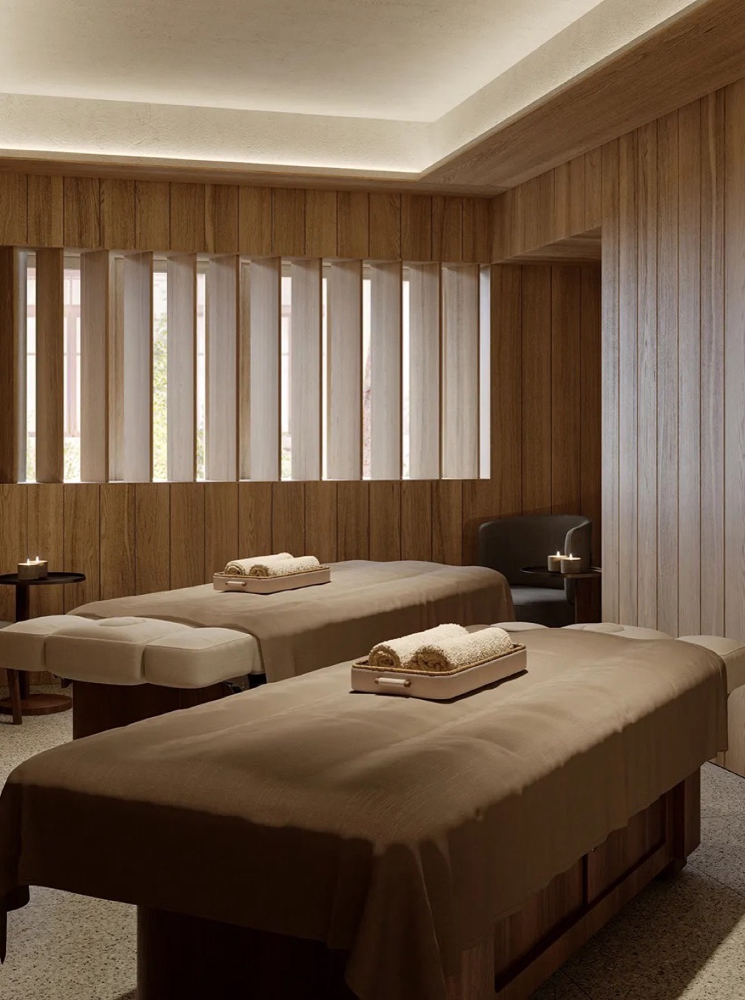
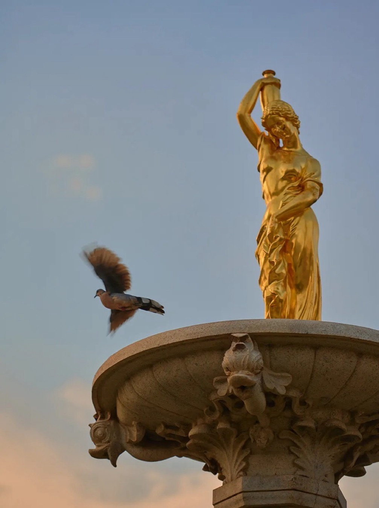
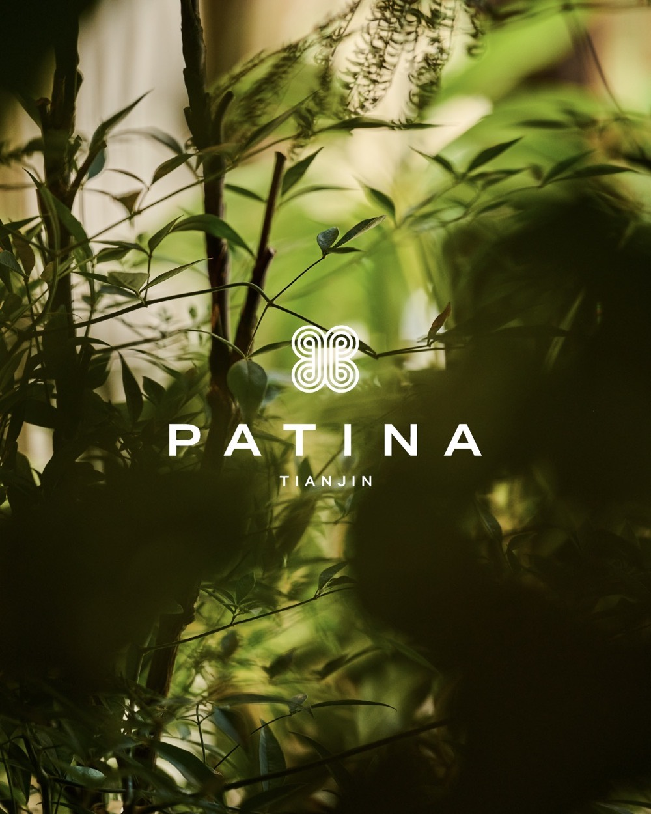
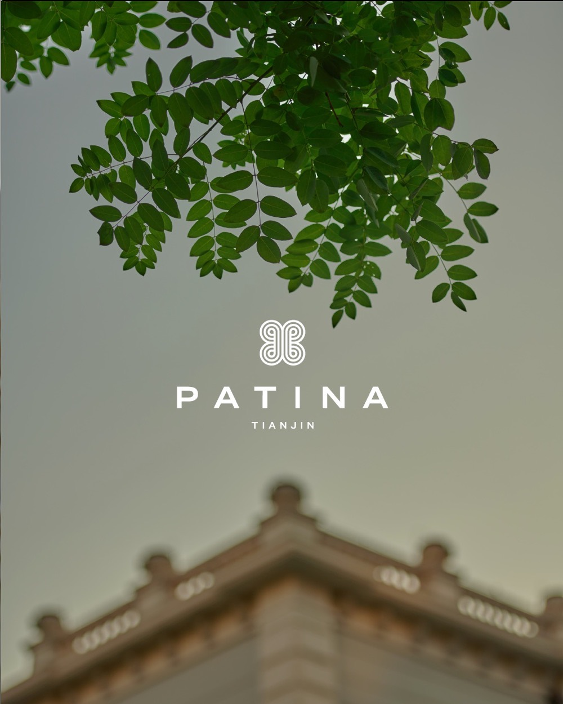
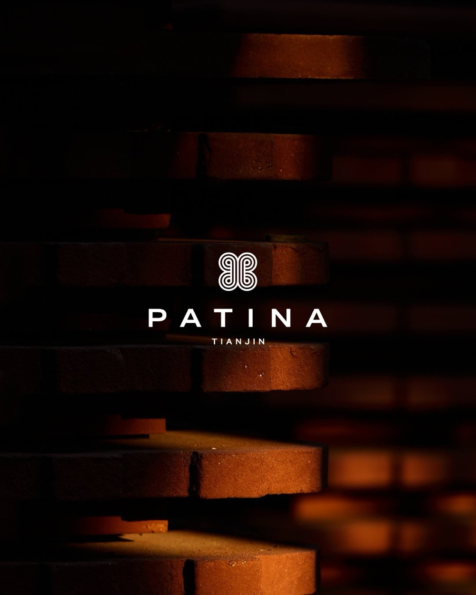
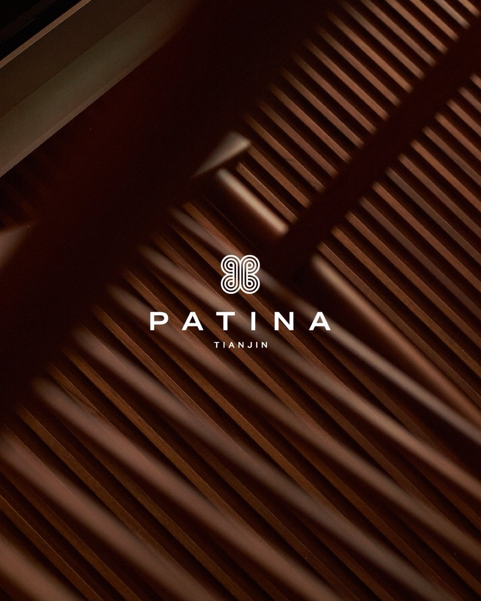
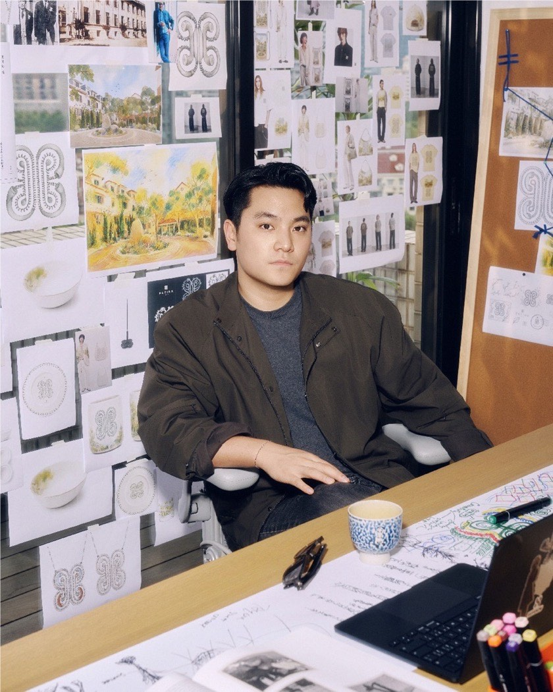
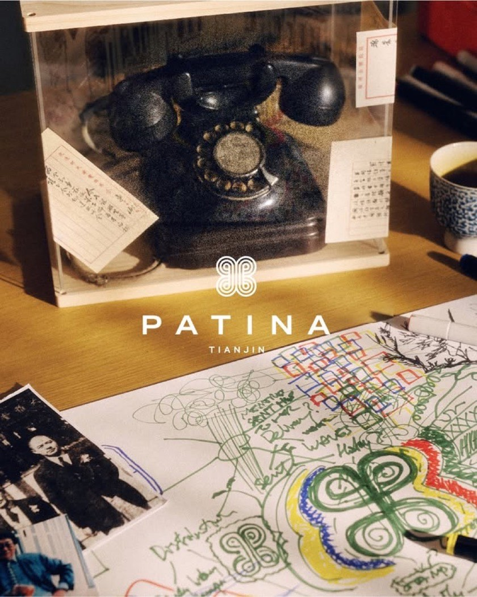

海河边，意式风情区。1902 年起步的那片意大利风貌建筑群里，17 栋洋楼如今挂上了同一个名字：柏典，Patina，嘉佩乐酒店集团旗下的生活方式品牌。这是它在中国内地的第一站，往前数，只有马尔代夫和大阪。
十一起，这个项目先开了一部分：13 号楼一层的咖啡馆，10 号楼的艺术展和文创。143 间客房及套房没有一口气放出来，它们在后面排着队，分阶段亮相。
01｜一半是酒店，一半是街区
先说数字。项目占地约 2.1 万平方米，17 栋建筑里，7 栋是区级不可移动文物，7 栋是历史风貌建筑，剩 3 栋是普通建筑。三种身份，意味着不能用一套装修标准糊弄过去：风貌要保，管线、消防、服务空间却得在老结构里重新找位置。
更有意思的是边界。沿街首层没有做成酒店大堂的延长线，而是引入了香氛品牌、天津老字号版画、快闪美术馆这一类业态。住客从专门通道进出，游客在同一条街上喝咖啡看展，居民照常回家。三层动线叠在一个街区里，管理难度不小，但街区因此是活的。
02｜143 间房，没有一间重样
标准化酒店的逻辑是复制：一张施工图，画三百次。历史建筑的逻辑正好相反：每栋楼的层高、开间、朝向都不一样，客房格局只能跟着建筑走。
这就是标题里那句话的分量。143 间房散落在 17 栋楼里，没有一间是另一间的复制品。拱廊留下来了，雕花铁艺留下来了，红砖墙留下来了，意大利风情和津派文化在同一间房里碰头。代价也很直接：没法算"每间房的平均造价"，因为每间房都是孤本。

03｜先开的是咖啡馆和展厅
十一起对外的是公共部分：咖啡馆可以坐，艺术展厅可以逛，文创可以买。健身房、完整的 SPA 和全套餐厅还在陆续到位。
从已公开的空间看，这个项目对"康养"是认真的。泳池藏在一个木格栅屋顶下，光从格子的缝隙里漏进水面；理疗房用整面木饰面包住，百叶把街景切成竖条，安静得很彻底。


04｜为什么是天津
柏典选址向来挑剔，只挑人文底蕴和发展潜力兼备的目的地。天津的筹码有三张：意风区是亚洲现存最完整的意大利风貌建筑群；京津高铁 30 分钟，客源不愁；过去几年，"洋楼+戏剧""洋楼+消费"这些玩法让老街区持续上新，城市更新的牌坊已经立住了。
对旅行者来说，这件事可以翻译得更简单：去天津，多留一晚。白天逛意风区，晚上住进一栋有百年历史的洋楼里，你的那间房，全世界没有第二间一模一样的。

05｜品牌的视觉：让光影替它说话
柏典在官方 Instagram 上发了一组品牌视觉，没有一张是酒店全景。四张图，同一个语法：白色细线的 logo 居中，其余全部让给材质和光。

第一张，logo 沉进绿植，被叶片半遮半掩；第二张，前景是压暗的树叶，远处的洋楼檐口虚成一条剪影，百年建筑不直接出镜，只从树叶底下探出一个轮廓。

第三张是这组图里最点题的一张：堆叠的老砖，只留一道暖光，颗粒和缺角看得清清楚楚。第四张干脆没有实体，只剩木格栅投在墙面上的斜影。

这套视觉其实在讲品牌名本身。Patina，拉丁语里的"铜绿"，指时间留在铜器和旧物表面的那层包浆。17 栋过了百年的洋楼，本身就是 patina 最大的那件展品，所以品牌不需要自拍，只需要站进叶子和砖的影子里，让时间替它出镜。

叙事这步棋同样清楚：柏典请来艺术家 Oscar Wang 为天津店创作场域特定作品，他的曾祖父曾在酒店东院旁的第四电话局旧址工作，品牌和这个家族四代的天津记忆接在了一起。官宣物料里，一张是他在工作室，身后整面墙钉满了这个项目的水彩、纹样和廓形研究；另一张，一台老式拨盘电话装进亚克力盒，旁边压着旧照片和手写的字迹，曾祖父那代人的物件，成了这次创作的起点。


事实核对：17 栋建筑（7 栋区级不可移动文物、7 栋历史风貌建筑、3 栋普通建筑）、143 间客房及套房、占地约 2.1 万平方米、总投资约 6.25 亿元、嘉佩乐酒店集团旗下柏典品牌中国内地首店（此前布局马尔代夫、大阪），来自天津市文旅局、中国日报及迈点网公开报道；酒店自 2026 年国庆起部分开业（咖啡馆与艺术展厅先行），全部客房的分阶段开放安排以官方发布为准。
curiohood · Stay Curious